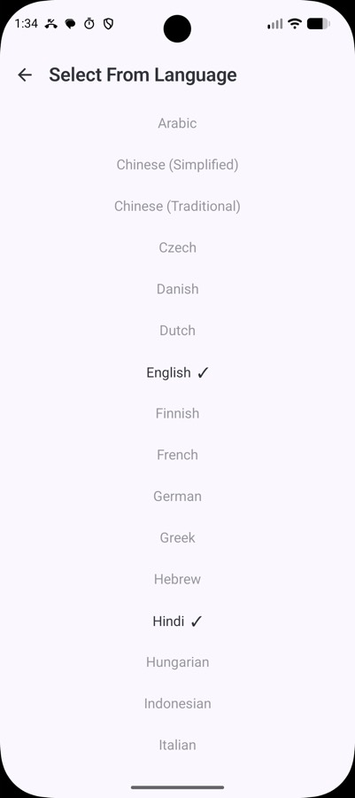

LocalTranslate: 30+ languages, no API key, no connection
The moment you most need a translator is the moment you have no signal and roaming would cost a fortune. That is a solvable problem.

Translation apps have a timing problem. You need one when you've just landed, when you're standing in front of a sign you can't read, when you're trying to explain something to a taxi driver. Which is exactly when you have no local SIM, no WiFi, and roaming charges that make you think twice about loading a webpage.
So the app that needs a connection is unavailable precisely when it matters. Meanwhile the phone in your hand is more than capable of running a translation model itself.
LocalTranslate uses ML Kit's Translate API to do it on-device across 30+ languages.
How it works
Pick a source and target language, type or paste text, get the translation. One tap swaps the direction, another copies the result.

The languages cover most of what you'd want travelling — Arabic, Chinese in both simplified and traditional, Czech, Danish, Dutch, English, Finnish, French, German, Greek, Hebrew, Hindi, Indonesian, Italian, Japanese, Korean, Malay, Norwegian, Polish, Portuguese, Romanian, Russian, Spanish, Swedish, Thai, Turkish, Ukrainian, Vietnamese and more.
The one asterisk, stated up front
Each language pair needs a model, roughly 30 MB, and that model has to be downloaded once. So the app is not offline on the very first use of a new pair — it's offline forever after.
I'd rather say that plainly than bury it, because "offline translation" apps that quietly need a connection are a real annoyance. The practical shape of it: download the pairs you want before you travel, while you're still on home WiFi, and the app then works permanently with the radio off.
It's the same bargain as offline maps, and it's a good one. 30 MB is nothing on a modern phone, and in exchange the app works in a basement, on a plane, in a foreign country with no data plan.
What's in it
| Concern | Choice |
|---|---|
| Translation | ML Kit Translate API 17.0.3 |
| Language | Kotlin 2.0.21 |
| UI | Jetpack Compose, Material 3 with Material You |
| Architecture | Single activity, ViewModel + StateFlow |
| Build | Gradle 8.9, AGP 8.7.3 |
| Minimum | Android 8.0, API 26 |
Material You dynamic colour, so it picks up your wallpaper palette, and a dark mode. No API keys, no accounts, no configuration. Releases are built by GitHub Actions on any commit containing #go, which is the same tiny CI convention I use across these projects — commit, push, and an APK appears attached to a release without me doing anything.
What it isn't
It's a text box, not a camera translator or a live conversation mode. Point-the-camera-at-a-menu is genuinely the killer feature of the big translation apps and this doesn't have it. Pairing this with OCR is the obvious extension — and it's exactly what LocalPhotos already does on the recognition side, so the pieces exist.
On-device model quality is also below the large cloud models, particularly on long or idiomatic passages. For signs, menus, short messages and simple questions — the actual travel use case — it's more than good enough.
Why this one was easy
Honestly? Because the platform did the hard part. ML Kit's translation models are already there, already optimised, already good. The app is a thin, careful shell around them.
Which is sort of the recurring theme across everything in this series: an enormous amount of AI capability is already sitting on the device, free, and the main thing standing between users and it is that nobody has bothered to build the small app that exposes it without an account and a subscription.
← All posts